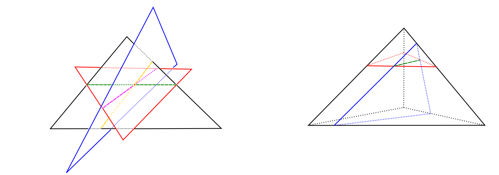
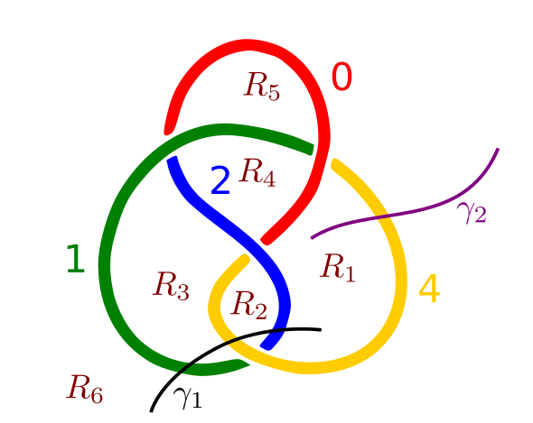
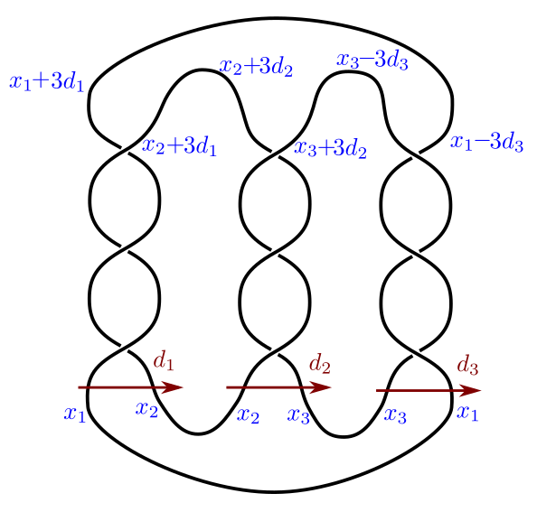

Contact Information
email id: sudipta_kolay(at)brown.edu
121 South Main Street
ICERM, 11th Floor
Providence, RI 02903, USA.
ICERM, 11th Floor
Providence, RI 02903, USA.
Research Interests
I am primarily interested in Geometric Topology, in particular embeddings, knottings and braidings of manifolds.I also study Contact and Symplectic Geometry and Combinatorial/Geometric Group Theory. 
Publications and Preprints
Piecewise Linear Genaralized Alexander's Theorem in dimension at most 5. arXivSubgroups of the mapping class group of the torus generated by powers of Dehn twists. arXiv
Knot Colorings: Coloring and Goeritz matrices. arXiv American Math Monthly , to appear.
Branched covering simply-connected 4-manifolds. Joint with D. Auckly, R. I. Baykur, R. Casals, T. Lidman, and D. Zuddas.
arXiv. MSP Open Book Series , to appear.
Lifting branched covers to braided embeddings. arXiv
Smallest non-cyclic quotients of braid and mapping class groups. arXiv Geometry & Topology, to appear.
Smallest non-cyclic quotients of the automorphism group of free groups. arXiv
Smallest nontrivial quotients of the commutator subgroup of braid groups. arXiv
Braid index of knotted surfaces. In preparation.
Braiding three manifolds in S3× D2 with branch locus a submanifold. In preparation.
Simple Colorings of pretzel knots. Joint with N. Caplinger . In preparation.

Mentoring
I have mentored undergraduates in Directed Reading programs and Research Experience for Undergraduates at Georgia Tech.Directed Reading program
Colorings on Knots, Spring 2019.Immersions of Discs, Spring 2019.
Curves on the torus, Fall 2019.
Research Experience for Undergraduates
Braid Coloring of Knots, Summer 2018.Non-left-orderable Surgeries on 1-bridge Braids, Summer 2017.